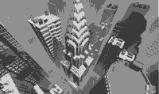
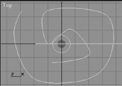
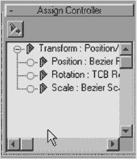
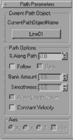

|
|
| 当前位置：电脑报电子版 > 1999 年 > 33 期 > OA专刊 > “人造”UFO——3Dmax 动画制作实例 |
| 《 “人造”UFO——3Dmax 动画制作实例 》 |
| 还记得《星球大战》中的天外来客吗，风卷残云般袭击地球……其地动山摇的画面效果，无以伦比的视觉震撼力，曾令多少观众叹为观止。 在唏嘘惊叹之余，我们不得不佩服电影魔术师们的艺术功底，电脑动画特技效果被发挥得淋漓尽致……UFO事件，我们在影片中见过不少，何不试试自己亲手导演它呢。下面我们就通过3Dmax强大的动画功能，制作一个不明外星来客驾驶的飞碟，在地球一城市上空盘旋的情景，必定十分壮观。 1．首先我们为建立场景做些准备工作。找一张高楼林立的城市风景图，将其装入3Dmax下的Maps目录中。 2．然后为场景创建一幅背景。选择工具栏上的材质编辑器按钮，进入材质编辑器后，选中第一个样本球，点击面板中的Maps卷展栏，选取Diffuse Color旁的None按钮，在弹出的Material/MapBrowser选框中选择Bitmap项，然后点取Bitmap Parameters栏下的空白按钮，在弹出的图片选择框中选择合适的背景图。在主菜单栏中选择Rendering/Environment项，弹出Environment设置窗口后点击Background选项下的None按钮，在弹出的Material/MapBrowser选框中首先点选Browse From下的Mtl Editor复选项，然后在右侧的列表框中选择刚刚编辑过的材质贴图，这样背景图片设置完毕。选用的背景图如图1。 3．新建一个飞碟模型，在编辑材质时应注意其自发光效果。 4．下面我们为飞碟加入运动效果。 首先建一条运动轨迹线，为使运动效果更加逼真，我们来制作一条空间曲线作为路径。首先选取Create/Shapes面板上的Line按钮，在Top视图和Front视图画两条曲线如图2，注意画线时打开Start New Shape复选项。进入Modify面板后，点击Edit Spline按钮。选取Top视图中曲线的一端点，点取Geometry栏下的weld按钮，拖动选择的端点向Front视图中曲线的一端点移动，这时在弹出的是否链接对话框中选择Yes按钮即可。 这样我们建立了一条空间曲线的Line 01。 5．选取Create/Helpers面板上的Dummy按钮，在视图中建立一虚拟几何体Dummy 01，进入Motion面板。选取PRS Parameters栏下的Position按钮，再打开Assign Controller卷展栏如图3，选择Position：Bemire Position项，再点取左上角的Assign Controller按钮，在弹出的选框中选择Path项，再在弹出的Path Parameters栏下点取None按钮，然后在视图中选择Dummy 01的运动路径Line 01如图4。 6．下面我们将运动路径加给飞碟。用鼠标选中Sphere 01、Tube 01和Sphere Gizmo 01，点取工具栏上的Select and Link，将飞碟与虚拟体Dummy 01链接起来。 7．点取动画播放按钮Play Animation按钮，即可观看，感觉很妙哦。 （北京/门槛工作室） |
| 下载本期推荐软件 | 页 首 |
| 《电脑报》版权所有，电脑报网站编辑部设计制作发布 |